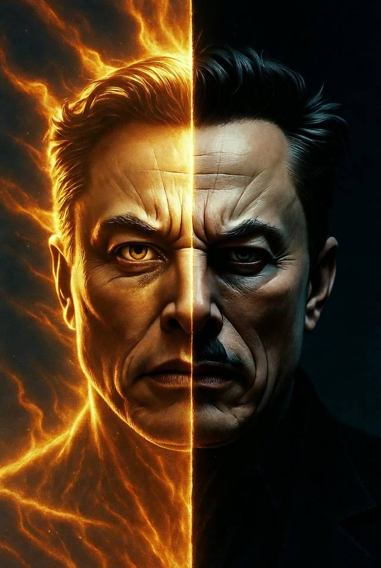

일론 머스크: 두얼굴의 혁신가
이 서적은 Gemini로 작성 되었습니다.

Chapter 1. 서론 - 두 얼굴의 혁신가
Chapter 2. 성공의 신화 - 집투(Zip2)부터 페이팔(PayPal)까지
Chapter 3. 우주를 향한 도약 - 스페이스X의 진정한 공헌
Chapter 4. 전기차 혁명 - 테슬라가 바꾼 산업의 패러다임
Chapter 5. 과장된 약속의 기술 - 완전 자율 주행(FSD)과 지연된 미래
Chapter 6. 시장 개입과 여론 조작 - 트위터 인수와 암호화폐 논란
Chapter 7. 혁신의 이면 - 가혹한 기업 문화와 노동 문제
Chapter 8. 비전인가 허상인가 - 뉴럴링크와 보링 컴퍼니의 실체
Chapter 9. 결론 - 공헌과 기만, 역사는 그를 어떻게 평가할 것인가
*표지그림:
*좌측은 인류에게 불을 전해 준 프로메테우스 일론 머스크를 나타 낸다. 우측은 선동가, 시가꾼, 노동착취의 사악한 일론 머스크를 나타 낸다. 아이러니 하게도 다른 인공지능은 실존 인물 이미지 생성을 거부하여 Grok으로 생성 하였다.